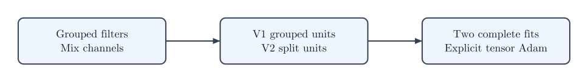
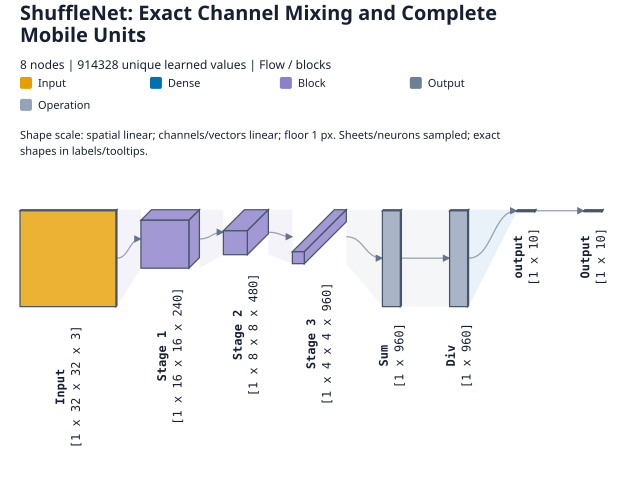
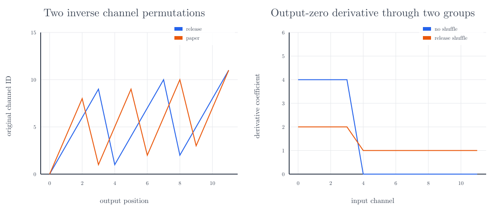
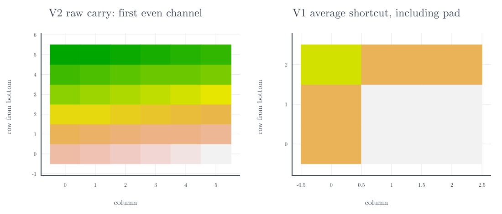
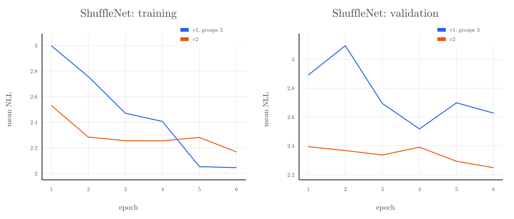
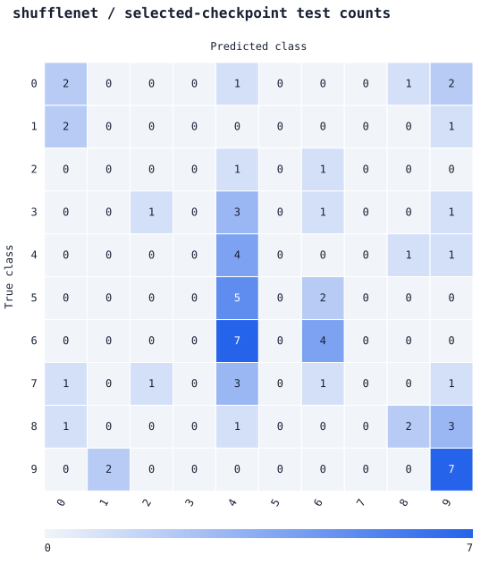
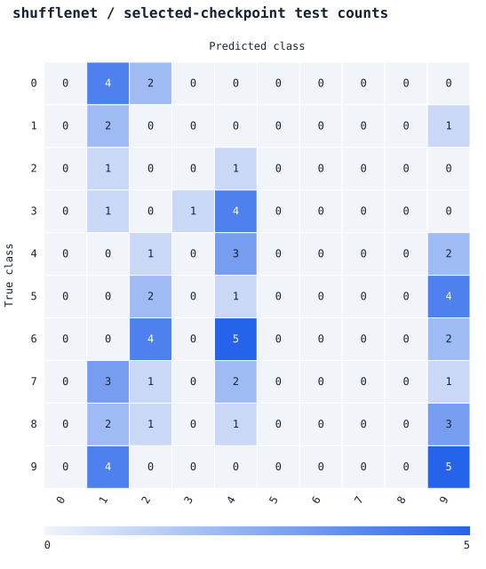

ShuffleNet: Exact Channel Mixing and Complete Mobile Units
Abstract
Grouped pointwise layers save arithmetic but can isolate channel groups. We check both shuffle orders, expose group connectivity through derivatives, verify v1/v2 unit semantics and all released budgets, then explicitly fit both complete CIFAR networks with tensor Adam.
Source example: examples/cpp/source/nn/1_convolutional_neural_networks/1.4_efficient_and_mobile_architectures/shufflenet.cpp.
The method
For C channels and g groups, the official release moves input channel c to (c mod g)*(C/g)+floor(c/g). The paper reshapes [g,C/g], transposes and flattens, which gives the inverse order. These are different permutations when g differs from C/g, but both can mix the next grouped layer's inputs. The report checks each index, inverse composition and weighted input derivatives. A shuffle has no learned parameters.
With two all-one 12-channel/three-group filters, output zero depends on only the first four inputs without a shuffle (coefficient four each). Release shuffling connects all twelve inputs: the first group's coefficient is two, the other groups one. This exact linear fixture exposes connectivity; it does not prove trained nonlinear blocks use every path or improve accuracy.
V1 reduces with grouped 1×1/BN/ReLU (ungrouped in the very first unit), shuffles, applies depthwise 3×3/BN, then grouped linear 1×1/BN. Stride one adds x and ReLU; stride two concatenates a zero-padded 3×3/2 average shortcut with the ReLU branch, producing out-Cin new channels. Padding counts in the mean: an all-one corner is 4/9. V2 stride one carries even input channels and transforms odd ones with pointwise/ReLU, depthwise/BN, pointwise/ReLU, then concatenates carry before branch. This is the release's split/mixing order, without a separate final paper shuffle. Negative carry values and their exact derivatives survive. V2 stride two uses the full input in both the projection and learned branch.
Both releases have a 3×3/2 conv/BN/ReLU stem, padded max-pool and 4/8/4-unit stages. V2 appends a final 1×1 and uses .2 dropout for the 2.0x model only; all classifiers are bias-free linear maps after global mean. Bias-free He-uniform fan-in initialization is an adaptation; BN learns scale/shift with epsilon 1e-5. Twelve full 224-pixel width/group budgets below use measured convolution output shapes. MACs exclude BN, activations, pooling, permutations and addition and are not measured runtime; the v2 paper warns arithmetic alone does not predict speed. Complete v1/v2 backward probes retain all widths/sixteen units at 64-pixel synthetic inputs, shift BN betas and separately check depthwise BN shifts removed by later training normalization.
The two visible fits retain full 1.0x widths and all sixteen units, with v1 groups three and v2 split units. For original 32×32 CIFAR images, small_stem removes only the initial stride/pool; learned counts are 914328/1265000 and moving counts 24480/16180. Each uses fixed 128 fit/64 validation/64 official-test rows, 6 batch-eight epochs of Adam(.001), explicit kernel L2=.0001/2 and independent padded crop/flip augmentation. Validation selects paired learned/moving-state checkpoints before testing. These tiny single-seed runs differ from the larger original examples and published schedules; they cannot establish an architecture ranking.
The concept diagram below is drawn by dm::graphics::Diagram. Its editable C++
source is the complete block below; regeneration uses the same datamunge toolchain
as the numerical examples. Exports consume the saved local SVG.
#include <dm/dm.hpp>
int main() {
std::filesystem::create_directories("build");
dm::graphics::Diagram diagram;
diagram.node("n0", {0.0, 0}, "Grouped filters\nMix channels");
diagram.node("n1", {5.2, 0}, "V1 grouped units\nV2 split units");
diagram.node("n2", {10.4, 0}, "Two complete fits\nExplicit tensor Adam");
diagram.edge("n0", "n1").edge("n1", "n2");
diagram.save_svg("build/shufflenet_concept.svg");
}
Executed tensor architecture
This figure executes the inference configuration shown in the code, using a zero-valued shape probe without fitting or loading a checkpoint. Named stage boundaries group whole subgraphs where available; other nodes retain functional-layer detail. Exact batch-inclusive shapes and reachable parameter totals come from the trace. Shared linear scales map spatial dimensions and channel counts to blocks; the one-pixel visibility floor is disclosed in the legend. Labels use compact monospace text, rotate counterclockwise and sit beside their own glyphs. Arrows flow left to right; wide diagrams scroll at native size on the website.
#include <dm/dm.hpp>
int main() {
namespace n = dm::nn;
namespace m = n::models;
n::set_num_threads(2);
std::filesystem::create_directories("build");
const int version = 1;
n::models::ShuffleNetConfig cfg;
cfg.version = version;
cfg.groups = 3;
cfg.classes = 10;
cfg.small_stem = true;
n::ParameterStore p(17), state(17);
n::Module architecture_model(
[&](const n::Tensor& image) {
const auto out = n::models::ShuffleNet(p, state, image, cfg, false);
auto previous = image;
for (std::size_t i = 0; i < out.stages.size(); ++i) {
n::model_stage("Stage " + std::to_string(i + 1), previous, out.stages[i]);
previous = out.stages[i];
}
return out.logits;
},
"ShuffleNet: Exact Channel Mixing and Complete Mobile Units");
n::ModelPlotOptions options;
options.style = n::ModelPlotStyle::Flow;
options.detail = n::ModelPlotDetail::Blocks;
options.labels = {.type = n::ModelPlotLabel::NameAndShape, .size = 12, .wrap = 24};
options.spacing = {.layer = 24, .lane = 12, .label = 8, .margin = 20};
options.sizing.spatial_size = 96;
options.sizing.channel_size = 42;
options.sizing.minimum_extent = 1;
options.opacity = .8;
const auto diagram = architecture_model.plot(n::zeros({1, 32, 32, 3}), options);
diagram.save_svg("build/shufflenet_architecture.svg");
std::print(
"{} displayed nodes; {} reachable learned values.\n",
diagram.nodes().size(),
diagram.parameter_count());
}8 displayed nodes; 914328 reachable learned values.

Simple channel mixing example
The derivative coefficients expose group connectivity exactly.
#include <dm/dm.hpp>
int main() {
namespace n = dm::nn;
const int channels = 12, groups = 3;
const auto x = n::arange(0, channels)
.to(n::DType::Float64)
.reshape({1, 1, 1, channels})
.detach()
.requires_grad_();
const auto release = n::models::ChannelShuffle(x, channels, groups),
paper = n::models::PaperChannelShuffle(x, channels, groups);
if (n::max(n::abs(n::models::ChannelShuffle(paper, channels, groups) - x)).item() != 0)
return 1;
for (int c = 0; c < channels; ++c)
if (release.at({0, 0, 0, (c % groups) * (channels / groups) + c / groups}) != c ||
paper.at({0, 0, 0, (c % (channels / groups)) * groups + c / (channels / groups)}) != c)
return 1;
const auto weights = n::arange(1, 13).to(n::DType::Float64).reshape(x.shape());
const auto gradient = n::grad(n::sum(release * weights), {x})[0];
for (int c = 0; c < channels; ++c)
if (gradient.at({0, 0, 0, c}) != weights.at({0, 0, 0, (c % groups) * 4 + c / groups}))
return 1;
n::ParameterStore p(17, n::DType::Float64);
n::ConvLayerOptions opts;
opts.bias = false;
auto build = [&](bool permute) {
auto h = n::models::GroupedConv2D(p, "first", x, 12, 1, 3, opts);
if (permute)
h = n::models::ChannelShuffle(h, 12, 3);
return n::models::GroupedConv2D(p, "second", h, 12, 1, 3, opts);
};
{
n::NoGradGuard guard;
build(false);
}
for (const auto &name : p.names())
p.set(name, n::ones_like(p.at(name)));
std::vector<n::Tensor> derivatives;
for (bool permute : {false, true})
derivatives.push_back(n::grad(n::sum(n::slice_axis(build(permute), 3, 0, 1)), {x})[0]);
for (int c = 0; c < 12; ++c) {
if (derivatives[0].at({0, 0, 0, c}) != (c < 4 ? 4 : 0) ||
derivatives[1].at({0, 0, 0, c}) != (c < 4 ? 2 : 1))
return 1;
}
auto order = dm::graphics::RPlot::create(), support = dm::graphics::RPlot::create();
const auto index = n::arange(0, 12).to_vector<double>();
order.lines(index, release.reshape({12}).to_vector<double>(), "release", {37, 99, 235})
.lines(index, paper.reshape({12}).to_vector<double>(), "paper", {234, 88, 12})
.title("Two inverse channel permutations")
.x_label("output position")
.y_label("original channel ID")
.y_limits(0, 15);
support
.lines(index, derivatives[0].reshape({12}).to_vector<double>(), "no shuffle",
{37, 99, 235})
.lines(index, derivatives[1].reshape({12}).to_vector<double>(), "release shuffle",
{234, 88, 12})
.title("Output-zero derivative through two groups")
.x_label("input channel")
.y_label("derivative coefficient")
.y_limits(0, 6);
std::filesystem::create_directories("build");
dm::graphics::RLayout::create(1, 2)
.add(order)
.add(support)
.size(1100, 470)
.fit_panels()
.save_svg("build/shufflenet_channels.svg");
std::print("Both 12-channel/3-group orders and inverse composition verified, including "
"weighted permutation derivatives. Two all-one grouped filters: without shuffle "
"four inputs have coefficient four; with shuffle all twelve contribute (first "
"group coefficient two, others one).\n");
}Both 12-channel/3-group orders and inverse composition verified, including weighted permutation derivatives. Two all-one grouped filters: without shuffle four inputs have coefficient four; with shuffle all twelve contribute (first group coefficient two, others one).

Unit shortcuts and pooling
Raw even channels and padded mean windows are checked separately.
#include <dm/dm.hpp>
int main() {
namespace n = dm::nn;
const auto type = n::DType::Float64;
n::ParameterStore p(17, type), state(17, type);
n::models::ShuffleContext c{p, state, false};
const auto x = n::linspace(-1, 1, 288, type).reshape({1, 6, 6, 8}).detach().requires_grad_();
const auto out = n::models::ShuffleV2Unit(c, "v2", x, 8, 1);
const auto even = n::slice_axis(x, 3, 0, 8, 2), carry = n::slice_axis(out, 3, 0, 4);
if (n::max(n::abs(carry - even)).item() != 0)
return 1;
const auto dx = n::grad(n::sum(carry), {x})[0];
for (int64_t ch = 0; ch < 8; ++ch)
if (n::max(n::abs(n::slice_axis(dx, 3, ch, ch + 1) - (ch % 2 == 0 ? 1 : 0))).item() != 0)
return 1;
const auto pooled = n::models::AveragePoolWithPadding(n::ones({1, 6, 6, 8}, type));
if (std::abs(pooled.at({0, 0, 0, 0}) - 4. / 9) > 1e-12 || pooled.at({0, 1, 1, 0}) != 1)
return 1;
const auto v1 =
n::models::ShuffleV1Unit(c, "v1", n::ones({1, 6, 6, 8}, type), 32, 2, true, 2);
if (v1.shape() != n::Shape{1, 3, 3, 32} ||
n::max(n::abs(n::slice_axis(v1, 3, 0, 8) - pooled)).item() != 0)
return 1;
const auto down = n::models::ShuffleV2Unit(c, "v2down", x, 16, 2);
if (down.shape() != n::Shape{1, 3, 3, 16})
return 1;
auto first = [](const auto &t) {
return n::slice_axis(t, 3, 0, 1).reshape({t.size(1), t.size(2)});
};
auto layout = dm::graphics::RLayout::create(1, 2);
layout.add(n::plot_tensor_map(first(even), -1, 1).title("V2 raw carry: first even channel"))
.add(
n::plot_tensor_map(first(pooled), 0, 1).title("V1 average shortcut, including pad"));
std::filesystem::create_directories("build");
layout.size(1100, 470).fit_panels().save_svg("build/shufflenet_units.svg");
std::print("V2 even-channel carry values/derivatives are exact; odd input derivatives into "
"the carry are zero. V1 3x3 mean counts padding (corner 4/9); strided v1/v2 "
"shapes verified.\n");
}V2 even-channel carry values/derivatives are exact; odd input derivatives into the carry are zero. V1 3x3 mean counts padding (corner 4/9); strided v1/v2 shapes verified.

Complete released budgets and gradients
All twelve presets and complete v1/v2 backward graphs retain the release topology.
#include <dm/dm.hpp>
int main() {
namespace n = dm::nn;
n::set_num_threads(2);
for (auto [version, groups, size, count, moving, expected] :
std::vector<std::tuple<int, int, std::string, int64_t, int64_t, int64_t>>{
{1, 3, "0.5x", 717324, 12240, 37589856},
{1, 3, "1.0x", 1864728, 24480, 137460672},
{1, 3, "1.5x", 3441168, 36720, 292443552},
{1, 3, "2.0x", 5449776, 48960, 524045184},
{1, 8, "0.5x", 1010448, 19584, 40469760},
{1, 8, "1.0x", 2433768, 39168, 138365952},
{1, 8, "1.5x", 4268952, 58752, 290188800},
{1, 8, "2.0x", 6521232, 78336, 521942016},
{2, 1, "0.5x", 1365792, 7952, 40476448},
{2, 1, "1.0x", 2278760, 16180, 145814296},
{2, 1, "1.5x", 3506720, 23440, 298970656},
{2, 1, "2.0x", 7402600, 33716, 590783000}}) {
n::NoGradGuard guard;
n::ParameterStore p(17), state(17);
n::models::ShuffleNetConfig cfg;
cfg.version = version;
cfg.groups = groups;
cfg.size = size;
const auto out = n::models::ShuffleNet(p, state, n::zeros({1, 224, 224, 3}), cfg);
int64_t macs = out.classifier_macs;
for (const auto &[shape, per_position] : out.layers)
macs += shape[1] * shape[2] * per_position;
if (p.count() != count || state.count() != moving || macs != expected ||
out.features.size(1) != 7 || out.stages.size() != 3)
return 1;
std::print("v{}, groups {}, {}: {} learned / {} moving scalars; {} kernel/classifier "
"MACs/image, 7x7 features.\n",
version, groups, size, count, moving, macs);
}
for (int version : {1, 2}) {
n::ParameterStore p(17), state(17);
n::models::ShuffleNetConfig cfg;
cfg.version = version;
cfg.update_stats = false;
const auto x = n::sin(.37 * n::arange(0, 2 * 64 * 64 * 3).to(n::DType::Float32))
.reshape({2, 64, 64, 3});
{
n::NoGradGuard guard;
n::models::ShuffleNet(p, state, x, cfg, true);
for (const auto &name : p.names())
if (name.ends_with("/beta"))
p.set(name,
(.5 * n::sin(.37 * n::arange(0, p.at(name).numel()).to(n::DType::Float32) +
double(name.size())))
.reshape(p.at(name).shape()));
}
const auto out = n::models::ShuffleNet(p, state, x, cfg, true);
const auto gradients = n::grad(n::mean(n::square(out.logits)), p.parameters());
double maximum = 0, minimum = std::numeric_limits<double>::infinity(), redundant = 0;
int count = 0;
for (size_t i = 0; i < gradients.size(); ++i) {
const double norm = n::sqrt(n::sum(n::square(gradients[i]))).item();
if (!std::isfinite(norm))
return 1;
maximum = std::max(maximum, norm);
if (p.names()[i].ends_with("/depthwise/bn/beta")) {
++count;
redundant = std::max(redundant, norm);
} else
minimum = std::min(minimum, norm);
}
if (count != (version == 1 ? 16 : 19) || redundant > 1e-5 * maximum || minimum <= 0)
return 1;
std::print(
"Full-width v{} at 64 pixels: {} finite parameter-tensor gradients; {} redundant "
"depthwise BN shifts max {:.9f}; other minimum {:.9f}, maximum {:.9f}.\n",
version, gradients.size(), count, redundant, minimum, maximum);
}
}v1, groups 3, 0.5x: 717324 learned / 12240 moving scalars; 37589856 kernel/classifier MACs/image, 7x7 features. v1, groups 3, 1.0x: 1864728 learned / 24480 moving scalars; 137460672 kernel/classifier MACs/image, 7x7 features. v1, groups 3, 1.5x: 3441168 learned / 36720 moving scalars; 292443552 kernel/classifier MACs/image, 7x7 features. v1, groups 3, 2.0x: 5449776 learned / 48960 moving scalars; 524045184 kernel/classifier MACs/image, 7x7 features. v1, groups 8, 0.5x: 1010448 learned / 19584 moving scalars; 40469760 kernel/classifier MACs/image, 7x7 features. v1, groups 8, 1.0x: 2433768 learned / 39168 moving scalars; 138365952 kernel/classifier MACs/image, 7x7 features. v1, groups 8, 1.5x: 4268952 learned / 58752 moving scalars; 290188800 kernel/classifier MACs/image, 7x7 features. v1, groups 8, 2.0x: 6521232 learned / 78336 moving scalars; 521942016 kernel/classifier MACs/image, 7x7 features. v2, groups 1, 0.5x: 1365792 learned / 7952 moving scalars; 40476448 kernel/classifier MACs/image, 7x7 features. v2, groups 1, 1.0x: 2278760 learned / 16180 moving scalars; 145814296 kernel/classifier MACs/image, 7x7 features. v2, groups 1, 1.5x: 3506720 learned / 23440 moving scalars; 298970656 kernel/classifier MACs/image, 7x7 features. v2, groups 1, 2.0x: 7402600 learned / 33716 moving scalars; 590783000 kernel/classifier MACs/image, 7x7 features. Full-width v1 at 64 pixels: 210 finite parameter-tensor gradients; 16 redundant depthwise BN shifts max 0.000000262; other minimum 0.007075063, maximum 18.410863876. Full-width v2 at 64 pixels: 169 finite parameter-tensor gradients; 19 redundant depthwise BN shifts max 0.000000159; other minimum 0.001463742, maximum 16.955444336.
Dataset and explicit fitting
Original images precede both visible optimizer runs.
#include <dm/dm.hpp>
int main() {
namespace n = dm::nn;
std::filesystem::path cache;
if (const auto *p = std::getenv("DATAMUNGE_DATA_DIR"))
cache = p;
else if (const auto *p = std::getenv("XDG_CACHE_HOME"))
cache = std::filesystem::path(p) / "datamunge/datasets";
else
cache = std::filesystem::path(std::getenv("HOME")) / ".cache/datamunge/datasets";
dm::datasets::fetch("cifar10", (cache / "cifar10").string());
const auto raw =
n::data::LoadCifar({cache / "cifar10/data_batch_1.bin"}, n::data::Cifar::k10);
const auto images = n::cast(raw.images, n::DType::Float32) / 255.;
const auto labels = raw.labels;
std::vector<int64_t> rows;
for (int cls = 0; cls < 10; ++cls) {
for (int64_t row = 0; row < labels.numel(); ++row)
if (labels.at({row}) == cls) {
rows.push_back(row);
break;
}
}
if (rows.size() != 10)
return 1;
std::filesystem::create_directories("build");
n::save_image_grid(n::take_rows(images, rows), "build/shufflenet_inputs.png", 5, 0., 1., 4,
1., 4);
std::print("One original cached training image per class, IDs 0..4 then 5..9.\n");
}One original cached training image per class, IDs 0..4 then 5..9.

#include <dm/dm.hpp>
int main() {
int rendered_confusions = 0;
namespace n = dm::nn;
auto training_plot = dm::graphics::RPlot::create(),
validation_plot = dm::graphics::RPlot::create();
int setting = 0;
for (int version : {1, 2}) {
n::set_num_threads(2);
std::filesystem::path cache;
if (const auto* p = std::getenv("DATAMUNGE_DATA_DIR"))
cache = p;
else if (const auto* p = std::getenv("XDG_CACHE_HOME"))
cache = std::filesystem::path(p) / "datamunge/datasets";
else
cache = std::filesystem::path(std::getenv("HOME")) / ".cache/datamunge/datasets";
dm::datasets::fetch("cifar10", (cache / "cifar10").string());
const auto raw = n::data::LoadCifar({cache / "cifar10/data_batch_1.bin"}, n::data::Cifar::k10);
const auto images = n::cast(raw.images, n::DType::Float32) / 255.,
labels = n::cast(raw.labels, n::DType::Int64);
const auto tx = n::slice_axis(images, 0, 0, 128), ty = n::slice_axis(labels, 0, 0, 128);
const auto vx = 2 * n::slice_axis(images, 0, 128, 192) - 1,
vy = n::slice_axis(labels, 0, 128, 192);
const auto official = n::load_cifar10((cache / "cifar10").string(), "test");
const auto qx = 2 * n::slice_axis(official.images, 0, 0, 64) - 1,
qy = n::slice_axis(official.labels, 0, 0, 64);
n::models::ShuffleNetConfig cfg;
cfg.version = version;
cfg.groups = 3;
cfg.classes = 10;
cfg.small_stem = true;
n::ParameterStore p(17), state(17);
auto output = [&](const n::Tensor& image, bool training) {
return n::models::ShuffleNet(p, state, image, cfg, training).logits;
};
{
n::NoGradGuard guard;
output(n::zeros({1, 32, 32, 3}), false);
}
if (p.count() != (version == 1 ? 914328 : 1265000) ||
state.count() != (version == 1 ? 24480 : 16180))
return 1;
n::OptimizerConfig config;
config.kind = n::OptimizerKind::Adam;
n::Optimizer optimizer(p, .001, config);
n::BatchOrder batches(128, 8, 2026);
n::Generator augmentation(151);
std::filesystem::create_directories("build");
const std::string checkpoint = "build/shufflenet_best";
double best = std::numeric_limits<double>::infinity();
int best_epoch = 0;
std::vector<double> epochs, train, validation;
for (int epoch = 1; epoch <= 6; ++epoch) {
batches.begin_epoch();
n::WeightedMean average;
for (auto rows = batches.next(); !rows.empty(); rows = batches.next()) {
const auto batch = n::take_rows(tx, rows), target = n::take_rows(ty, rows);
std::vector<n::Tensor> transformed;
for (int64_t row = 0; row < batch.size(0); ++row) {
auto image =
n::pad(n::slice_axis(batch, 0, row, row + 1), {{0, 0}, {4, 4}, {4, 4}, {0, 0}});
image = n::augment::random_crop(image, 32, 32, augmentation);
transformed.push_back(n::augment::random_flip_left_right(image, augmentation));
}
const auto nll = n::sparse_softmax_cross_entropy(
output(2 * n::concat(transformed, 0) - 1, true), target);
auto objective = nll;
for (const auto& w : p.parameters())
if (w.dim() >= 2)
objective = objective + .00005 * n::sum(n::square(w));
optimizer.minimize(objective);
average.add(nll.item(), rows.size());
}
n::NoGradGuard guard;
const double val = n::sparse_softmax_cross_entropy(output(vx, false), vy).item();
if (!std::isfinite(val))
return 1;
epochs.push_back(epoch);
train.push_back(average.value());
validation.push_back(val);
if (val < best) {
best = val;
best_epoch = epoch;
p.save(checkpoint + "_params.npz");
state.save(checkpoint + "_state.npz");
}
}
p.load(checkpoint + "_params.npz");
state.load(checkpoint + "_state.npz");
n::NoGradGuard guard;
const auto prediction = output(qx, false);
const double test_nll = n::sparse_softmax_cross_entropy(prediction, qy).item();
const double training_nll =
n::sparse_softmax_cross_entropy(output(2 * tx - 1, false), ty).item();
if (!std::isfinite(test_nll))
return 1;
const auto truth = n::one_hot(qy, 10), predicted = n::one_hot(n::argmax(prediction, 1), 10);
const auto confusion = n::matmul(n::transpose(truth, {1, 0}), predicted);
n::save_npz("build/shufflenet_heldout_"+std::to_string(rendered_confusions)+".npz",{{"truth",qy},{"logits",prediction},{"counts",confusion.to(n::DType::Int64)}});
n::ConfusionMatrix::from_counts(confusion.to(n::DType::Int64))
.save_svg(
"build/shufflenet_confusion_api_" + std::to_string(rendered_confusions++) + ".svg",
{.title = "shufflenet / selected-checkpoint test counts"});
if (n::sum(confusion).item() != 64)
return 1;
const std::string label = version == 1 ? "v1, groups 3" : "v2";
const std::vector<dm::graphics::RGB> colours = {{37, 99, 235}, {234, 88, 12}, {22, 163, 74}};
training_plot.lines(epochs, train, label, colours[setting]);
validation_plot.lines(epochs, validation, label, colours[setting]);
++setting;
std::print("ShuffleNet {}: ", label);
std::print(
"128 fit / 64 validation / 64 official-test rows; {} learned scalars, {} moving "
"scalars; {} explicit Adam updates.\nSelected epoch {}; validation NLL {:.6f}; "
"inference training NLL {:.6f}; test NLL {:.6f}; test accuracy {:.6f}.\n",
p.count(),
state.count(),
optimizer.iterations(),
best_epoch,
best,
training_nll,
test_nll,
n::accuracy(prediction, qy));
}
training_plot.title("ShuffleNet: training").x_label("epoch").y_label("mean NLL");
validation_plot.title("ShuffleNet: validation").x_label("epoch").y_label("mean NLL");
dm::graphics::RLayout::create(1, 2)
.add(training_plot)
.add(validation_plot)
.size(1100, 470)
.fit_panels()
.save_svg("build/shufflenet_training.svg");
}ShuffleNet v1, groups 3: 128 fit / 64 validation / 64 official-test rows; 914328 learned scalars, 24480 moving scalars; 96 explicit Adam updates. Selected epoch 4; validation NLL 2.517453; inference training NLL 1.930610; test NLL 2.366683; test accuracy 0.296875. ShuffleNet v2: 128 fit / 64 validation / 64 official-test rows; 1265000 learned scalars, 16180 moving scalars; 96 explicit Adam updates. Selected epoch 6; validation NLL 2.248344; inference training NLL 2.062772; test NLL 2.266927; test accuracy 0.171875.

The executed results above report the current selected checkpoint. These fixed small subsets and source budgets do not establish a ranking of architectures. Assess training, validation and test NLL together with the complete held-out confusion. Augmented or batch-moment training objectives and saved-state inference can differ; weak or below-chance outcomes remain part of the result. The independent geometry, parameter-count and derivative checks establish separate implementation claims.
Native confusion matrices
These matrices use the held-out predictions from the executed program above.
The native ConfusionMatrix SVG API labels exact counts with true classes
running from top to bottom and predicted classes from left to right.


Regenerate every adjacent view
Each alternate architecture or held-out confusion below is copied from this run's local build directory.
#include <dm/dm.hpp>
int main(){std::filesystem::create_directories("build");std::filesystem::copy_file("build/shufflenet_confusion_api_0.svg","build/export_shufflenet_confusion_api_0.svg",std::filesystem::copy_options::overwrite_existing);}#include <dm/dm.hpp>
int main(){std::filesystem::create_directories("build");std::filesystem::copy_file("build/shufflenet_confusion_api_1.svg","build/export_shufflenet_confusion_api_1.svg",std::filesystem::copy_options::overwrite_existing);}Conclusion
Channel permutations can connect grouped filters without adding parameters. Exact index, shortcut and derivative checks distinguish the released v1/v2 designs; full budgets and visible Adam loops make the complete classifiers and the limits of the small-data comparison reproducible.
References
- [Zhang et al. (2018), ShuffleNet](https://arxiv.org/abs/1707.01083).
- [Ma et al. (2018), ShuffleNet V2](https://arxiv.org/abs/1807.11164).
- [Official release](https://github.com/megvii-model/ShuffleNet-Series).
- [CIFAR-10 dataset](https://www.cs.toronto.edu/~kriz/cifar.html).